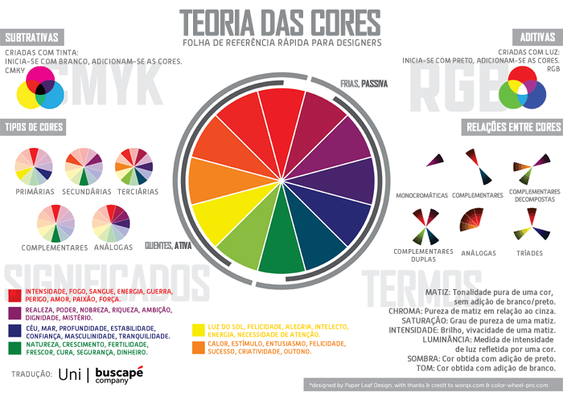

Existem estudos, que mostram que ao comprarmos um produto, existem parâmetros, não somente a cor, que induzem nós a comprar algo ou não.
A harmonia das cores, é SUPER importante para a criação de um site!
Nada disso é consciente. Nós seres humanos, definimos as vezes diversas escolhas do nosso dia a dia, irracionalmente, atráves do nosso subconsciente.
Professor Guanabara, indicou alguns livros, e explicou basicamente como quase todos os grandes sites de técnologia aplicam a teoria das cores.
O azul, ele tem uma ligação, com conceitos como: Competencia, Sabedoria, Calma, Confiança, Profissionalismo, Integridade, Segurança.
Ela é a cor MAIS aceita do mundo, com 46% de aprovação.
E a cor azul também é a com MENOR taxa de rejeição.
Quando estamos criando nosso site, devemos utiliza a Teoria das cores para nós inspirar na criação, e para isso, nós temos a Tabela das cores, falando o que cada uma faz e representa na teoria.
